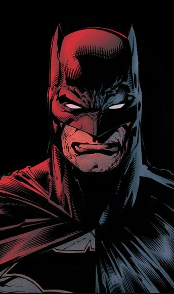
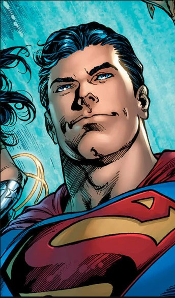
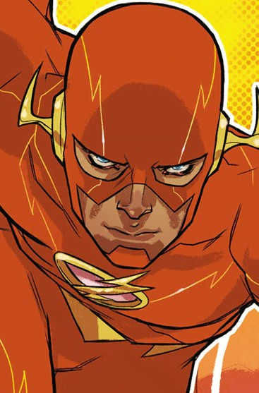
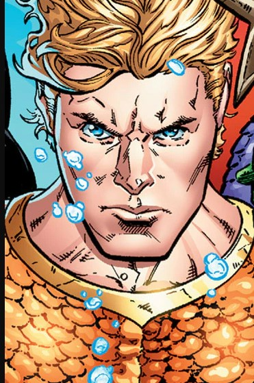
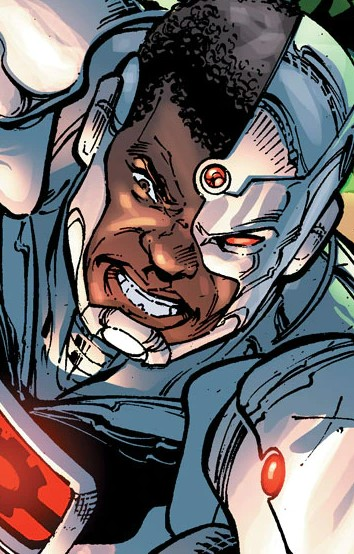

Batman
Batman, también conocido como el "Cruzado Enmascarado", es Bruce Wayne, un multimillonario filántropo de Gotham City. Tras presenciar el asesinato de sus padres cuando era niño, Bruce jura dedicar su vida a combatir el crimen. A diferencia de otros superhéroes, Batman no posee superpoderes, sino que confía en su intelecto superior, habilidades de detective, maestría en artes marciales, vastos recursos tecnológicos y una voluntad inquebrantable. Opera desde las sombras, infundiendo miedo en los criminales de Gotham.
Ver Video
Superman
Superman, el "Hombre de Acero", es uno de los superhéroes más icónicos. Su verdadero nombre es Kal-El, y es el último superviviente del planeta Krypton, enviado a la Tierra por sus padres cuando era un bebé. En la Tierra, es adoptado por los Kent, quienes lo crían como Clark Kent. Bajo el sol amarillo de la Tierra, adquiere habilidades increíbles como vuelo, superfuerza, supervelocidad, invulnerabilidad, visión de calor y aliento congelante. Su misión es proteger a la humanidad, encarnando ideales de verdad, justicia y esperanza.
Ver Video
Mujer Maravilla
La Mujer Maravilla, cuyo nombre es Princesa Diana de Themyscira, es una guerrera amazona y embajadora de la paz. Proveniente de la mítica isla de Themyscira, habitada solo por mujeres guerreras, Diana es entrenada desde pequeña en el combate y las artes marciales. Posee superfuerza, velocidad, agilidad, invulnerabilidad parcial y la capacidad de volar. Sus armas distintivas son el Lazo de la Verdad, que obliga a quien es atado a decir la verdad, y sus brazaletes protectores que pueden desviar proyectiles. Representa la justicia, el amor y la igualdad.

Ver Video
Flash
Flash es el "Hombre Más Rápido del Mundo". Varios personajes han asumido este manto a lo largo de la historia, pero el más conocido es Barry Allen. Barry era un científico forense que, tras ser alcanzado por un rayo y bañado en productos químicos, obtuvo la capacidad de acceder a la Fuerza de la Velocidad, una fuente de energía extra-dimensional que le permite moverse, pensar y reaccionar a velocidades inimaginables, romper la barrera del sonido y del tiempo, y vibrar a través de objetos.
Ver Video
Aquaman
Aquaman es Arthur Curry, el rey de la Atlántida y un héroe de dos mundos. Hijo de un farero humano y una reina atlante, Arthur posee una fisiología única que le permite sobrevivir tanto en tierra como bajo el agua. Posee superfuerza, durabilidad, la capacidad de respirar bajo el agua, comunicarse telepáticamente con la vida marina y nadar a velocidades increíbles. Su tridente místico es una herramienta poderosa que le permite controlar el agua y lanzar ráfagas de energía.
Ver Video
Cyborg
Cyborg es Victor Stone, un talentoso atleta estudiantil cuya vida cambió drásticamente tras un terrible accidente. Para salvar su vida, su padre, un científico, lo reconstruyó utilizando tecnología avanzada y cibernética. Esto le otorgó un cuerpo en gran parte robótico, dándole habilidades como superfuerza, durabilidad, la capacidad de interactuar y manipular sistemas tecnológicos, y un potente cañón sónico en su brazo. A menudo lucha con su humanidad y su identidad.
